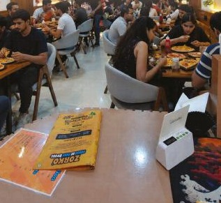

An affordable, vegetarian, multi-cuisine food concept serving local communities through a franchise-led network.
Visit the brand websiteOur brands
One entrepreneurial spirit.
Many ways to grow.
From affordable vegetarian food to specialised concepts and consultancy, explore the wider world connected to Zorko.
A dedicated cheese-forward food concept featured in the magazine, with its own outlet network.
Explore Cheese CornerA waffle and dessert café concept with sweet creations, beverages, and a growing brand identity.
Explore UK WaffleA chaat concept introduced in Zorko Spotlight’s November 2026 edition.
Ask about the concept
Beyond our own brands
From an idea
to a food business.
Zorko’s consultancy work supports food entrepreneurs with concept development, kitchen planning, menu development, branding, and operational guidance. The magazine showcases a wider set of concepts developed through this work.
Explore consultancy services